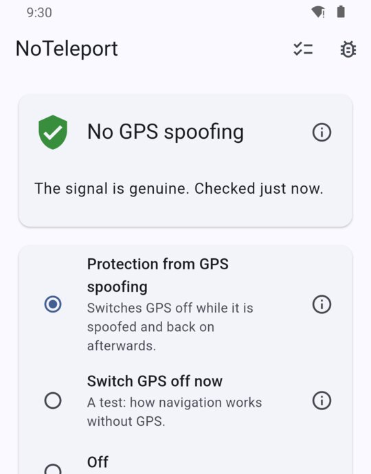
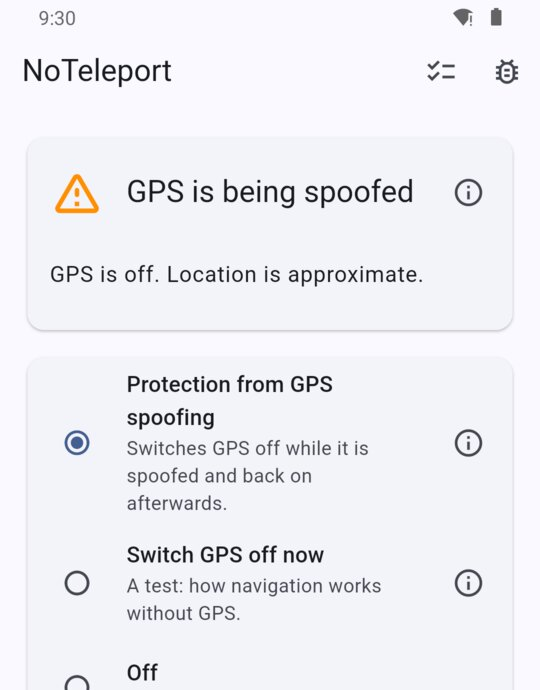

So that navigation does not “teleport” you during an air-raid alert
NoTeleport is an Android app for people who live in Ukraine. It keeps navigation working during air-raid alerts, when the GPS signal gets spoofed.
The app is still being prepared for release: the button will work as soon as it is on Google Play.
- Sends nothing anywhere. The app has no internet access at all.
- Collects nothing about you. Your location is processed on your phone only.
- No ads, no analytics. The app has no advertising or third-party modules that learn anything about you.
- No sign-up. No account and no phone number are needed.
More about this in the privacy policy.
The problem it answers
During an air-raid alert the GPS signal is often spoofed. A navigation app suddenly shows you in another city or even another country, hundreds of kilometres from where you are. The route is gone, and navigation is unusable until the spoofing ends.
What NoTeleport does
- Checks the GPS signal on the phone.
- As soon as it notices spoofing, switches GPS off, for all apps at once.
- The phone goes on working out where you are from Wi-Fi and mobile networks. That is less precise than GPS, but navigation shows you where you really are.
- When the spoofing ends, NoTeleport switches GPS back on by itself.
While there is no spoofing the app changes nothing on the phone, so it can stay on all the time.


Good to know beforehand
- It does not bring GPS precision back. While GPS is off the location is approximate: usually to within a few dozen metres in town, worse outside it. But nothing “teleports” you to another city.
- The first seconds of spoofing. At the very start of spoofing, navigation may show the fake place for a few seconds: that is how long it takes to recognise it. Then it comes back.
- Made for Ukraine. It recognises spoofing by two signs: the coordinates end up outside Ukraine, or suddenly jump an impossible distance.
- Navigation apps. Checked with Google Maps, Waze and OsmAnd. In Waze brief jumps are possible during spoofing.
- The phone. Android 8 or newer with Google services.
- Setup. A few steps in the phone's settings, once; it takes a few minutes. Step-by-step guide with pictures.
How to install
After installing, go through the setup: it takes a few minutes.
Who makes it and where to write
The author of the app: LinkedIn profile.
The app is new. If something does not work or is unclear, write: github.com/noteleport/noteleport.github.io/issues. It will help make the app better.